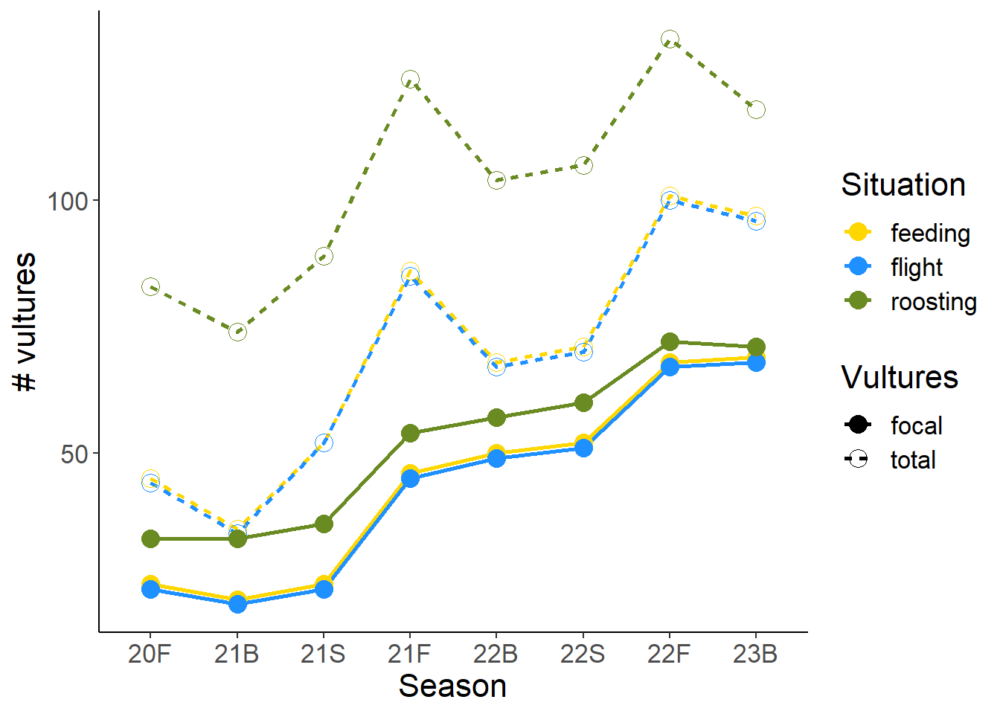
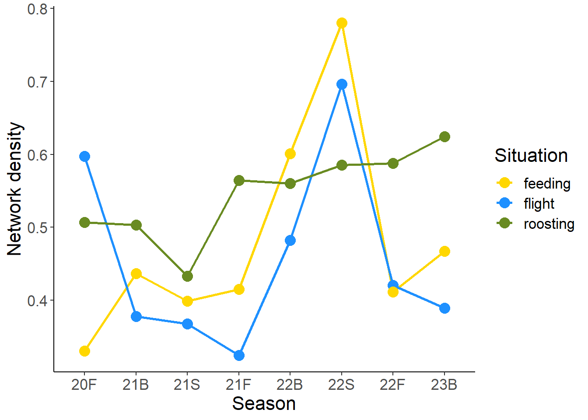

Manuscript draft
Introduction
The social structure of animal groups has consequences for disease transmission, information sharing, and population dynamics. At the population level, the density and modularity of social interaction networks can drive epidemic probability and duration (Sah et al. (2017), Silk et al. (2017)), govern the flow of information about food resources [REF], and contribute to population persistence through Allee effects [REF]. Individuals differ in their encounter rates, number of contacts, and centrality in the population social network [REF]. For individual animals, which make up the social environment of the group. social centrality in different behavioral situations contributes to their likelihood of contracting disease, finding mates, or accessing resources [REFS]. For example, in networks with high levels of degree heterogeneity, the most connected individuals may function as disease superspreaders (Lloyd-Smith et al. (2005)). For example, possums with higher betweenness and closeness in a social network had higher infection rates (Corner et al. (2003)), and higher connectivity in lizards was associated with a greater parasite load (Godfrey et al. (2009)). In general, individuals that are more central in the social network both have a higher infection risk and transmit disease more quickly than those that are more peripheral (Romano et al. (2016), Balasubramaniam et al. (2019)).
An individual’s social centrality may be determined by many factors. Differences in social position have been attributed to individual phenotypic characteristics, such as age, sex, or personality [REFS]. Of course, how an animal uses space is also an important driver of how many conspecifics it interacts with, and how frequently. The relationship between movement, space use, and social interaction patterns has been an area of active research in recent years. Webber et al -Webber et al. (2023) have characterized the variation in patterns of animal movement and space use as the “spatial phenotype,” as part of a larger framework for understanding the relationships between social and spatial drivers of animal behavior. In this light, the “spatial phenotype” may be considered in addition to more conventional phenotypic measures to explain why some individuals are more central than others in their social networks.
Additionally, sociality has many dimensions. Individuals interact in different social and behavioral contexts, defined by the types of activities being performed (e.g. feeding, playing, sleeping) and/or the intent and consequences of the interaction itself (e.g. agonistic vs. affiliative interactions) [REFS]. The overall social environment experienced by an individual is made up of its interactions in all of these different contexts Silk et al. (2013). Individuals differ in their centrality in these different contexts Sharma et al. (2023). Different types of interactions are also localized differently in space. For example, social foraging occurs, by definition, while individuals move concurrently across a landscape, so which individuals forage together and co-foraging rates are likely to be directly tied to movement behavior and spatial phenotypes of the individuals involved. By contrast, mating or fighting interactions might be more localized to specific places where these behaviors occur, such as nest or den sites, leks, territorial boundaries, or scarce food resources. An informed understanding of the relationship between the spatial and social phenotypes, then, should allow for the possibility that the spatial phenotype relates differently to an individual’s position in each situation-specific social network.
Eurasian griffon vultures (Gyps fulvus) provide a study system well suited to ascertaining the relationship between individuals’ spatial phenotypes and their social centrality.
obligate scavengers, large soaring fliers, lots of movement
Unusual GPS tracking coverage of the population–high proportion of individuals tracked, so we can get a population-level sense of movement behavior and social interaction patterns
Three clear social situations in which they interact, each with a different significance/relevance.
Communal roosts: many individuals together at once, variability in size/density of roosts. Used for information exchange [REFS] and also important for disease transmission [or not–cf Elvira Nili]. Breeding/nesting also occurs at/near roost sites, on cliffs.
Flight: interactions in flight are important for information transfer Harel et al. (2017), finding locations of thermal uplift Sassi et al. (2023) and feeding sites Spiegel et al. (2013b), Cortés-Avizanda et al. (2014)
Feeding: Communal feeding at carcasses. Also sometimes standing around the carcass site. Sometimes associate for a while before beginning to feed, e.g. waiting for critical mass to be reached (Orr Spiegel, pers. comm.) Potentially also important for disease transmission [but not, cf. ref Elvira Nili].
While some griffon vultures make long-range forays [REFS], there is a mostly resident population in a relatively small area in southern Israel [REF]. The population is small and restricted enough that individuals’ home ranges are highly overlapping, with most individuals using a large fraction of available space in the region. This makes habitat features likely to affect most individuals similarly, though age has been shown to factor into flight skill and could therefore impact movement Harel et al. (2016). GPS fixes are taken once every 10 minutes, frequently enough to measure flight movements with good accuracy, and most individuals are tracked for several months to several years. Individuals have previously been shown to vary in their social network positions in each of the three social situations, with centrality in one situation not necessarily predicting centrality in another and each situation contributing differently to the overall social structure of the population Sharma et al. (2023).
[General introduction to the importance of time scale in social network analysis]
- Blonder et al. (2012), Cantor et al. (2012), Hobson et al. (2013), Rasmussen et al. (2013), Holme (2015), Farine (2018), Fisher and Pinter-Wollman (2021), Pasquaretta et al. (2021)
Social situations occur over different time scales, and this is an important consideration when studying the causes and consequences of their structure. In defining co-roosting, co-flight, and co-feeding interactions based on proximity in each of these behavioral situations, we have created social networks in which edges already conceptually represent interactions over different amounts of time. Because individuals have one roosting location per night, edge weights in the co-roosting network are measured in units of days, while pairs of individuals can interact many times in flight or at a carcass on a given day.
The biological processes driving the execution of these behaviors and the formation of these networks are likewise happening over different time scales. An individual must decide once per day which roost to go to Harel et al. (2016). But flight is a continuous process driven by many decisions resulting from individual and social information Sassi et al. (2023), and feeding events are concentrated in time on a given day. Feeding events are driven by the temporal rhythm of the appearance of carcasses, which occur naturally or are provisioned every [NUMBER] days and persist for hours to a few days (Orr Spiegel, pers. comm.). Individuals may return to the same carcass on successive days. While at a carcass, individuals may fight and interact many times.
Research Questions
Q1: What is the relationship between spatial phenotype and social interactions?
H1A: Individuals that move more will have more, and stronger, encounters with other unique individuals.
- P1A: Vultures that move more will encounter more others (higher degree centrality in the social network) and have more interactions (higher strength in the social network) than vultures who move less.
H1B: Individuals that are more exploratory will have more but weaker encounters with other unique individuals.
- P1B: Exploratory vultures will encounter more unique individuals (higher degree centrality), but will have fewer interactions (lower strength) compared to less exploratory vultures.
Q2: How is the relationship between spatial phenotype and social interactions impacted by social situation and season?
H2A: Social situations in which animals move more will have a greater impact on social interactions
- P2A: Social centrality in co-flight networks will be more strongly associated with spatial phenotype than in co-roosting and co-feeding behavioral situations.
H2B: Seasons in which animals move more will have a stronger impact on social interactions
- P2B: The relationship between movement and social position will be stronger in the non-breeding seasons (summer and fall) than during the breeding season.
Q3: How does the time scale of movement predict social interactions?
H3A: The relationship between movement and social centrality will be strongest within the time scales at which change occurs in the social network.
P3A: Co-flight networks will change hourly to daily, co-feeding networks will change every few days, and co-roosting networks will change over longer periods of time (weeks to months).
P3B: Social position in each of the social situations will be best predicted by individuals’ movement patterns aggregated over the corresponding time scale.
Methods
Study system
To answer these questions, we drew on data from a free-flying population of Eurasian griffon vultures (Gyps fulvus) fitted with GPS tags. [tag specs]. Over the period 2020-09-01 to 2023-05-15, the dataset contained [number] of tagged vultures. Tags recorded GPS fixes, as well as speed and heading readings, every 10 minutes when battery conditions allowed. The GPS data are stored on Movebank Kays et al. (2022) and were loaded into R using the move package Kranstauber et al. (2023).
Tagging and aging
[Tagging methods] For each vulture, age was determined using [methods]
Data cleaning
We subsetted the dataset to exclude periods of time that vultures spent in capture cages, in the wildlife hospital following poisonings or injuries, or in captivity prior to wild release (in the case of captive-born birds). We cleaned the remaining data to remove invalid GPS fixes [more details]. Then we split data from each into three seasons. The fall, or “pre-breeding,” season includes dates from 15 September through 14 December; the breeding season lasts from 15 December through 14 May of the following year; and the summer lasts from 15 May through 14 September. These season boundaries were chosen based on biological knowledge of the vultures’ breeding timelines (see more details in the Study System section). Therefore, the analysis contained a total of 8 seasons, from the fall of 2020 through the 2023 breeding season (Table X). All of these data was reserved for use in proximity-based social network analysis. Since the GPS tags give few to no fixes overnight, and since reception is often very poor on the cliffs where vultures roost, we combined information from individuals’ last locations of the evening and first locations of the morning to assign a roost site for each individual on each night [more details]. Full details about the data cleaning and roost assignment procedure can be found in the supplementary material.
To characterize individual movement behavior and spatial phenotype, we cleaned the data further. We restricted movement points to the period between sunrise and sunset (calculated for each day with respect to a point at the centroid of Israel using the R package suncalc Thieurmel and Elmarhraoui (2022). We restricted movement calculations to a set of focal individuals with activity regions centered in the Negev region of Israel, the site of most of our tagging effort. For each vulture, we also removed days with too few GPS fixes. Fixes were ideally collected every 10 minutes, but sometimes they were less frequent due to bad cellular reception in the cliff areas where vultures often sit or due to low battery charge. For each individual, only days with 10 or more GPS fixes per day were retained, unless the battery charge never dipped below 50% during that day. In those cases, the low number of points was attributed to the vultures spending most of their time sitting on a cliff without much movement, rather than to missed points due to low battery. Since these sedentary days represent an important component of vulture movement behavior, we retained this information (Orr Spiegel, pers. obs.).
[Geography]
For each season, we calculated movement measures only for individuals tracked for at least 30 days (after removing low-point days as described above). We calculated flight altitude by extracting ground elevation information from elevation rasters obtained from the elevatr R package Hollister et al. (2022), at a zoom level of [level–more details about resolution?] and subtracting those numbers from the vultures’ tag-mounted altimeter readings. Finally, since some tags were occasionally set to a much higher fix rate (e.g. every 1 minute) for short periods of time, we downsampled the data to a 10 minute fix rate to make sure that all individuals had comparable fix rates.
Movement calculations
For each focal individual, we characterized a pattern-based spatial phenotype (Webber et al. 2023) by calculating a variety of movement and space use measures over the course of each of the eight seasons. Using the adehabitatHR package Calenge and Fortmann-Roe (2023), we calculated home range as the 95% kernel utilization distribution (KUD) of a vulture’s GPS fixes in a season; core area as the 50% KUD, and core area use intensity as the ratio of the 50% to the 95% KUD.
To quantify roosting behavior, we assigned each individual’s night roost site to a pre-defined roost site polygon determined from clustering of [years] of vulture roost locations [more details?]. Then, for each vulture in each season, we calculated the number of unique roosts used, the proportion of nights switching roosts (versus returning to the same roost as the previous night), and the diversity of roosts used (Shannon diversity index).
We identified in-flight fixes (ground speed >= 5 m/s) and calculated measures of daily flight behavior, including maximum and median daily flight altitude and daily flight time (the sum of time intervals between adjacent in-flight fixes). Finally, we used all fixes to calculate daily distance traveled (the sum of all distances between successive fixes); daily maximum displacement (the straight-line distance between the beginning of the daily movement track and the farthest point reached on that day); and movement tortuosity (cumulative distance to the point of maximum displacement divided by the straight-line distance to the point of maximum displacement Benhamou (2004)). We took seasonal means of each of these individual daily measures to get a single value per individual vulture, per season.
Summarizing movement measures
To gain a complete picture of individual vultures’ spatial phenotype, we summarized the above-described movement measures (centered and scaled) in a principal component analysis. The first two principal components together explained 65% of the variance in spatial phenotype (Table X).
PC1 explained 47.6% of the variance in spatial phenotype. All movement variables except tortuosity loaded positively on PC1, with the strongest contributors being mean daily maximum displacement, roost diversity, and proportion of nights roost-switching (Figure X). Overall, we can understand PC1 as an aggregate measure of individual movement. Vultures with high PC1 values cover more area, use more different roosts, travel farther, spend more time flying, and have straighter trajectories.
PC2 explained 17.4% of the variance in spatial phenotype. The space use variables loaded positively on this principal component, while flight variables (both altitude measures, daily distance traveled, and daily flight time) contributed strongly negatively (Figure X). We can understand PC2 as a rough measure of exploratory behavior. Vultures with high PC2 values use a larger spatial area, while those with low PC2 values fly higher and spend more time flying (in a more concentrated area).
Model fitting and selection
We modeled the relationship between the spatial phenotype variables and the network measures using linear mixed-effects regression models, fitted using the lme4 and lmerTest packages Bates et al. (2015), Kuznetsova et al. (2017). We fit separate models for each response variable (degree and strength). The predictors included were movement (PC1), exploration (PC2), situation (feeding, flight, roosting), age group (juvenile/subadult, adult), and season (breeding, summer, fall). To account for the different numbers of individuals in the network in each unique season, we included a random effect for the interaction of season and year, e.g. “2022_fall” (8 levels). To account for consistent individual differences in network position or behavior, and because individuals varied in how many seasons they were included in, we also included an individual-level random effect.
Degree values were scaled and standardized before modeling. Because the distribution of strength values was extremely right-skewed, the strength values were incremented by one-half the minimum non-zero strength value (0.018) and then log-transformed.
For each response variable, we began by fitting a model without any interaction terms to check for multicollinearity between the predictors and check model assumptions, using the performance and DHARMa packages Lüdecke et al. (2021), Hartig (2022). Next, we fitted a model containing two three-way interaction terms (between season, situation, and each of the spatial phenotype variables), all of the included two-way interaction terms, age as a main effect, and the two random effects (individual ID; season by year). Examining the model summaries and p values produced by lmerTest, we then removed non-significant higher-order interaction terms, one by one, stopping when all remaining interaction terms were significant. All main and random effects were retained in the final model.
For each model, we calculated marginal effects using the emmeans package Lenth (2023) and created visualizations using ggeffects and ggplot2 Wickham (2016), Lüdecke (2018).
Results
Networks varied in the total and focal number of individuals, from a minimum of 34 vultures (20 focal) in the 2021 breeding season to a maximum of 132 vultures (72 focal) in the 2022 fall season in the co-roosting network (Figure 1) . The number of vultures tagged generally increased over time as more individuals were fitted with tags over the course of the study period.

Seasonal social networks varied in density from 0.3243697 (fall 2021 ) to 0.7801242 (summer 2022) (Figure 2). Co-roosting networks were generally denser than co-feeding or co-flight networks.
The networks created for each season and each social situation differed in number of nodes and network-level properties (Table X). In general, co-roosting networks were more dense than networks for the other two social situations, with co-flight networks being sparsest. [other metrics]? Degree Two-way interactions between situation and both movement (PC1) and exploration (PC2) were retained in the degree model. No interaction effects including season were retained, and the main effect of season was not significant (Table XX).
Discussion
Balasubramaniam, K. N., B. A. Beisner, J. A. Hubbard, J. J. Vandeleest, E. R. Atwill, and B. McCowan. 2019. Affiliation and disease risk: social networks mediate gut microbial transmission among rhesus macaques. Animal Behaviour 151:131–143.
Bates, D., M. Mächler, B. Bolker, and S. Walker. 2015. Fitting linear mixed-effects models using lme4. Journal of Statistical Software 67:148.
Benhamou, S. 2004. How to reliably estimate the tortuosity of an animal’s path:: straightness, sinuosity, or fractal dimension? Journal of Theoretical Biology 229:209–220.
Blonder, B., T. W. Wey, A. Dornhaus, R. James, and A. Sih. 2012. Temporal dynamics and network analysis. Methods in Ecology and Evolution 3:958–972.
Calenge, C., and contributions from S. Fortmann-Roe. 2023. adehabitatHR: Home range estimation.
Cantor, M., L. L. Wedekin, P. R. Guimarães, F. G. Daura-Jorge, M. R. Rossi-Santos, and P. C. Simões-Lopes. 2012. Disentangling social networks from spatiotemporal dynamics: the temporal structure of a dolphin society. Animal Behaviour 84:641–651.
Corner, L. A. L., D. U. Pfeiffer, and R. S. Morris. 2003. Social-network analysis of Mycobacterium bovis transmission among captive brushtail possums (Trichosurus vulpecula). Preventive Veterinary Medicine 59:147–167.
Cortés-Avizanda, A., R. Jovani, J. A. Donázar, and V. Grimm. 2014. Bird sky networks: How do avian scavengers use social information to find carrion? Ecology 95:1799–1808.
Csardi, G., and T. Nepusz. 2005. The igraph software package for complex network research. InterJournal Complex Systems:1695.
Farine, D. R. 2018. When to choose dynamic vs. static social network analysis. Journal of Animal Ecology 87:128–138.
Fisher, D. N., and N. Pinter-Wollman. 2021. Using multilayer network analysis to explore the temporal dynamics of collective behavior. Current Zoology 67:71–80.
Ginsberg, J. R., and T. P. Young. 1992. Measuring association between individuals or groups in behavioural studies. Animal Behaviour 44:377–379.
Godfrey, S. S., C. M. Bull, R. James, and K. Murray. 2009. Network structure and parasite transmission in a group living lizard, the gidgee skink, Egernia stokesii. Behavioral Ecology and Sociobiology 63:1045–1056.
Harel, R., O. Duriez, O. Spiegel, J. Fluhr, N. Horvitz, W. M. Getz, W. Bouten, et al. 2016. Decision-making by a soaring bird: time, energy and risk considerations at different spatio-temporal scales. Philosophical Transactions of the Royal Society B: Biological Sciences 371.
Harel, R., O. Spiegel, W. M. Getz, and R. Nathan. 2017. Social foraging and individual consistency in following behaviour: Testing the information centre hypothesis in free-ranging vultures. Proceedings of the Royal Society B: Biological Sciences 284:20162654.
Hartig, F. 2022. DHARMa: Residual diagnostics for hierarchical (multi-level / mixed) regression models.
Hobson, E. A., M. L. Avery, and T. F. Wright. 2013. An analytical framework for quantifying and testing patterns of temporal dynamics in social networks. Animal Behaviour 85:83–96.
Hollister, J., T. Shah, A. L. Robitaille, M. W. Beck, and M. Johnson. 2022. Elevatr: Access elevation data from various APIs.
Holme, P. 2015. Modern temporal network theory: a colloquium. The European Physical Journal B 88:234.
Kays, R., S. C. Davidson, M. Berger, G. Bohrer, W. Fiedler, A. Flack, J. Hirt, et al. 2022. The Movebank system for studying global animal movement and demography. Methods in Ecology and Evolution 13:419–431.
Kranstauber, B., M. Smolla, and A. K. Scharf. 2023. Move: Visualizing and analyzing animal track data.
Kuznetsova, A., P. B. Brockhoff, and R. H. B. Christensen. 2017. lmerTest package: Tests in linear mixed effects models. Journal of Statistical Software 82:126.
Lenth, R. V. 2023. Emmeans: Estimated marginal means, aka least-squares means.
Lloyd-Smith, J. O., S. J. Schreiber, P. E. Kopp, and W. M. Getz. 2005. Superspreading and the effect of individual variation on disease emergence. Nature 438:355–359.
Lüdecke, D. 2018. Ggeffects: Tidy data frames of marginal effects from regression models. Journal of Open Source Software 3:772.
Lüdecke, D., M. S. Ben-Shachar, I. Patil, P. Waggoner, and D. Makowski. 2021. Performance: An r package for assessment, comparison and testing of statistical models. Journal of Open Source Software 6:3139.
Pasquaretta, C., T. Dubois, T. Gomez-Moracho, V. P. Delepoulle, G. Le Loc’h, P. Heeb, and M. Lihoreau. 2021. Analysis of temporal patterns in animal movement networks. Methods in Ecology and Evolution 12:101–113.
Pennycuick, C. J. 1972. Soaring Behaviour and Performance of Some East African Birds, Observed from a Motor-Glider. Ibis 114:178–218.
Rasmussen, C., Y. L. Dupont, J. B. Mosbacher, K. Trøjelsgaard, and J. M. Olesen. 2013. Strong Impact of Temporal Resolution on the Structure of an Ecological Network. PLOS ONE 8:e81694.
Romano, V., J. Duboscq, C. Sarabian, E. Thomas, C. Sueur, and A. J. J. MacIntosh. 2016. Modeling infection transmission in primate networks to predict centrality-based risk. American Journal of Primatology 78:767–779.
Sah, P., S. T. Leu, P. C. Cross, P. J. Hudson, and S. Bansal. 2017. Unraveling the disease consequences and mechanisms of modular structure in animal social networks. Proceedings of the National Academy of Sciences 114:4165–4170.
Sassi, Y., B. Nouzières, M. Scacco, Y. Tremblay, O. Duriez, and B. Robira. 2023. The use of social information in vulture flight decisions.
Sharma, N., N. Anglister, O. Spiegel, and N. Pinter-Wollman. 2023. Social situations differ in their contribution to population-level social structure in griffon vultures. Ecology and Evolution 13:e10139.
Silk, J., D. Cheney, and R. Seyfarth. 2013. A practical guide to the study of social relationships. Evolutionary Anthropology: Issues, News, and Reviews 22:213–225.
Silk, M. J., D. P. Croft, R. J. Delahay, D. J. Hodgson, N. Weber, M. Boots, and R. A. McDonald. 2017. The application of statistical network models in disease research. Methods in Ecology and Evolution 8:1026–1041.
Spiegel, O., W. M. Getz, and R. Nathan. 2013a. Factors influencing foraging search efficiency: Why do scarce lappet-faced vultures outperform ubiquitous white-backed vultures? The American Naturalist 181:E102–E115.
Spiegel, O., R. Harel, W. M. Getz, and R. Nathan. 2013b. Mixed strategies of griffon vultures’ (gyps fulvus) response to food deprivation lead to a hump-shaped movement pattern. Movement Ecology 1:5.
Thieurmel, B., and A. Elmarhraoui. 2022. Suncalc: Compute sun position, sunlight phases, moon position and lunar phase.
Webber, Q. M. R., G. F. Albery, D. R. Farine, N. Pinter-Wollman, N. Sharma, O. Spiegel, E. Vander Wal, et al. 2023. Behavioural ecology at the spatialsocial interface. Biological Reviews 98:868–886.
Wickham, H. 2016. ggplot2: Elegant graphics for data analysis. Springer-Verlag New York.